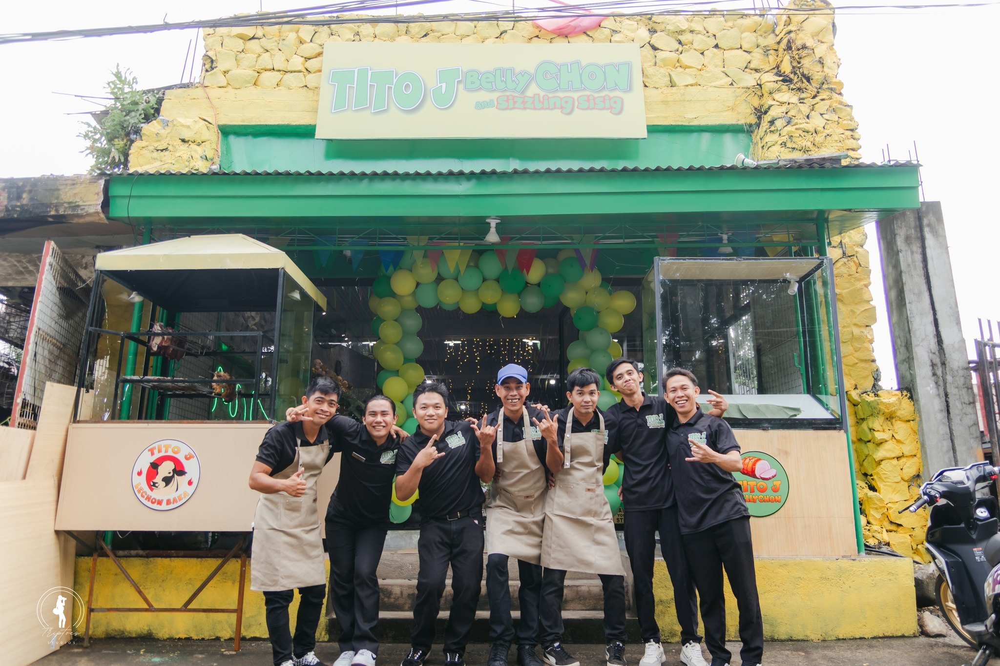
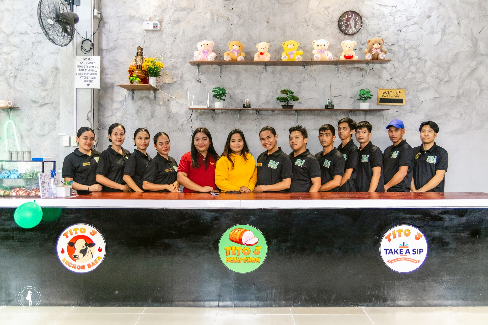
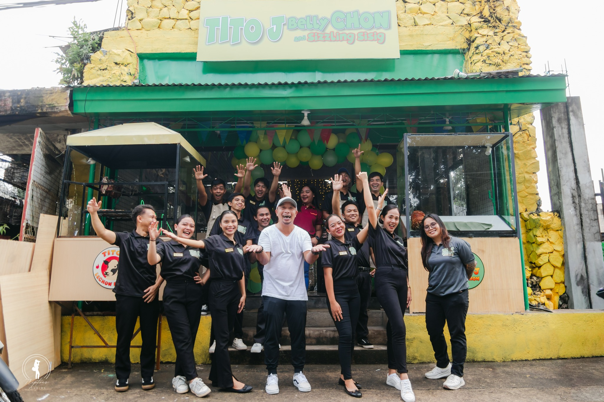

There’s nothing quite like the comfort of lutong bahay — the aroma of BellyChon and Sizzling Sisig simmering with laughter and good company.
Discover MoreWe’re excited to welcome you to TITO J BELLYCHON AND SIZZLING SISIG — your new home of Filipino flavors! Bring your appetite, your stories, and your barkada, because here, every meal feels like family.
At Tito J’s, we serve authentic lutong bahay dishes made with love and tradition — from our crispy, juicy BellyChon to our flavorful Sizzling Sisig that sizzles with every bite. Whether you’re celebrating a special moment, catching up with friends, or just craving that warm Filipino comfort food, you’ll always find a place at our table.
Pair your meal with refreshing drinks or local cold beers, and enjoy the cozy, welcoming vibe that makes you feel right at home. Because at Tito J’s, every bite is a taste of family, laughter, and togetherness.
📍 Location:
Juan Luna Street, Brgy Zone 4, Behind PNB Bank, Cadiz City
Behind every crispy Bellychon and sizzling Sisig is a team that cooks with heart. Our crew at TITO J BELLYCHON AND SIZZLING SISIG is more than just staff — they’re family, united by their passion for great food and warm Filipino hospitality. Each plate they serve is prepared with laughter, teamwork, and love — the true taste of home. ❤️


